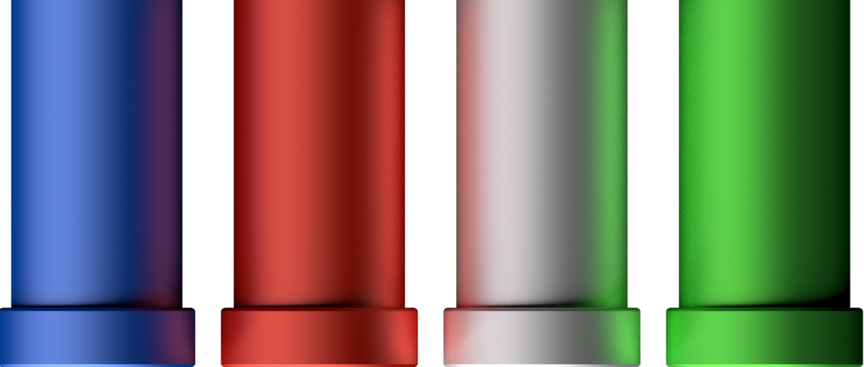
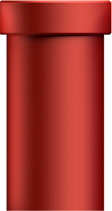
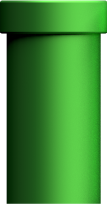
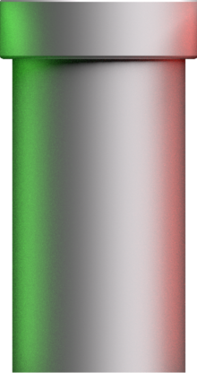
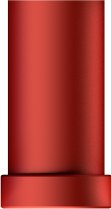
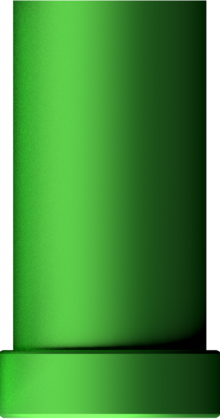
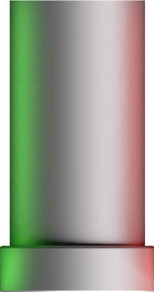
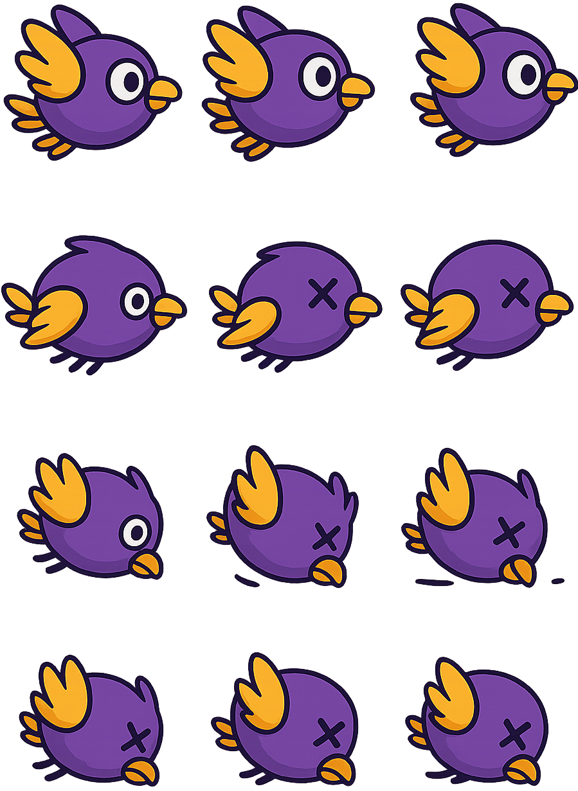
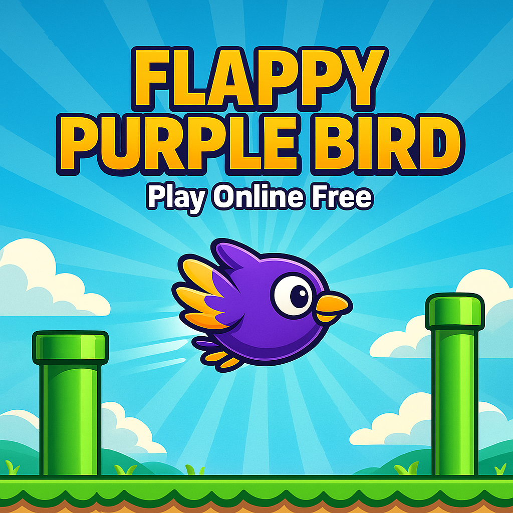

Free flappy bird online game
Flappy bird is s modern game, in which player has to pass the pipes without touching then or hitting the ground. This is an endless game; player score increases as the pipe is passed away from the screen.
There are 2 types of pipes 1 facing upward and another facing downward. Both the pipes are dangerous for the player and will result to game over.
In case of player doesn’t take any action as input then it will result in hitting the ground and at the same moment game will be end.
How to Start game in Mindhack.in
When you landed on the page then you will see a button for starting the game, click on that and boom you started a game.
For restarting the game, again button will come for restarting the game.
How to play in Desktop
At mindhack.in you can play Flappy bird on Desktop. Player can press Up arrow to make up movement, Left and right key to make Left and Right movement.
How to play in Mobile
At mindhack.in you can play Flappy bird on Mobile. Player can slide up to make upper movement, Left and Right slide will result in Left and Right movements.
Whenever a pipe is passed then 1 point will be given to player.
Frequently Asked Questions
Can we play Flappy bird for free?
Yes, At mindhack.in all the games are free.
Is there any competition for Flappy bird game?
No